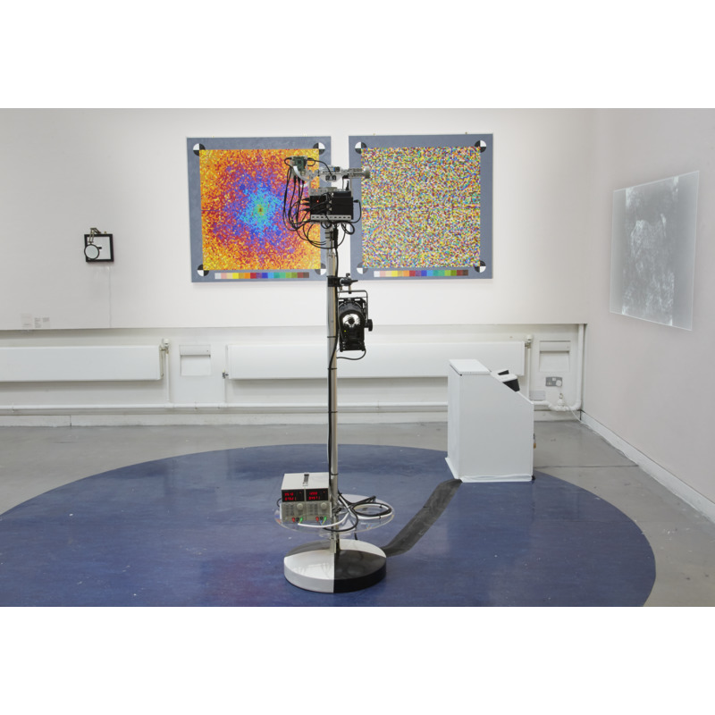

1 of 9

2 of 9

3 of 9

4 of 9

5 of 9

6 of 9

7 of 9

8 of 9

9 of 9
John Hipwell's practice has a significant computational component, involving the transformation, decomposition and reconstruction of image information across a range of media. Standing Wave, Change Hands emerged from his interest in the relationship between art, science and technology. It addresses the challenge of creating an artwork that is technical in nature, has a functional component, but which also incorporates an element of manual intervention and human narrative.
A lightbox displays a 35mm negative, with all but a small region of interest redacted. Just visible within, via a magnifying lens, are a pair of hands photographed in 1958. This image has been digitised and decomposed into individual frequencies, corresponding to the ripples of intensity across its surface. The information is rendered as a pair of oil paintings, with frequency increasing from the center and rising to a maximum on the boundary. The left-hand painting depicts the magnitude of each frequency and the right, its shift in phase relative to its neighbours. The painted spectrum is repeatedly scanned by the "painting recognition" apparatus, a machine vision system, which processes the frequency data and reconstructs it back into an image, fusing traces of painted brushstrokes with the distribution of granular silver in the original negative. Passing between the apparatus and the paintings, the viewer corrupts the pipeline and becomes folded into the reconstruction process.
My ageing hands increasingly resemble my father's, offering succour in an shifting world. Each of us is a node in a standing wave that stretches back across the generations, changing hands.